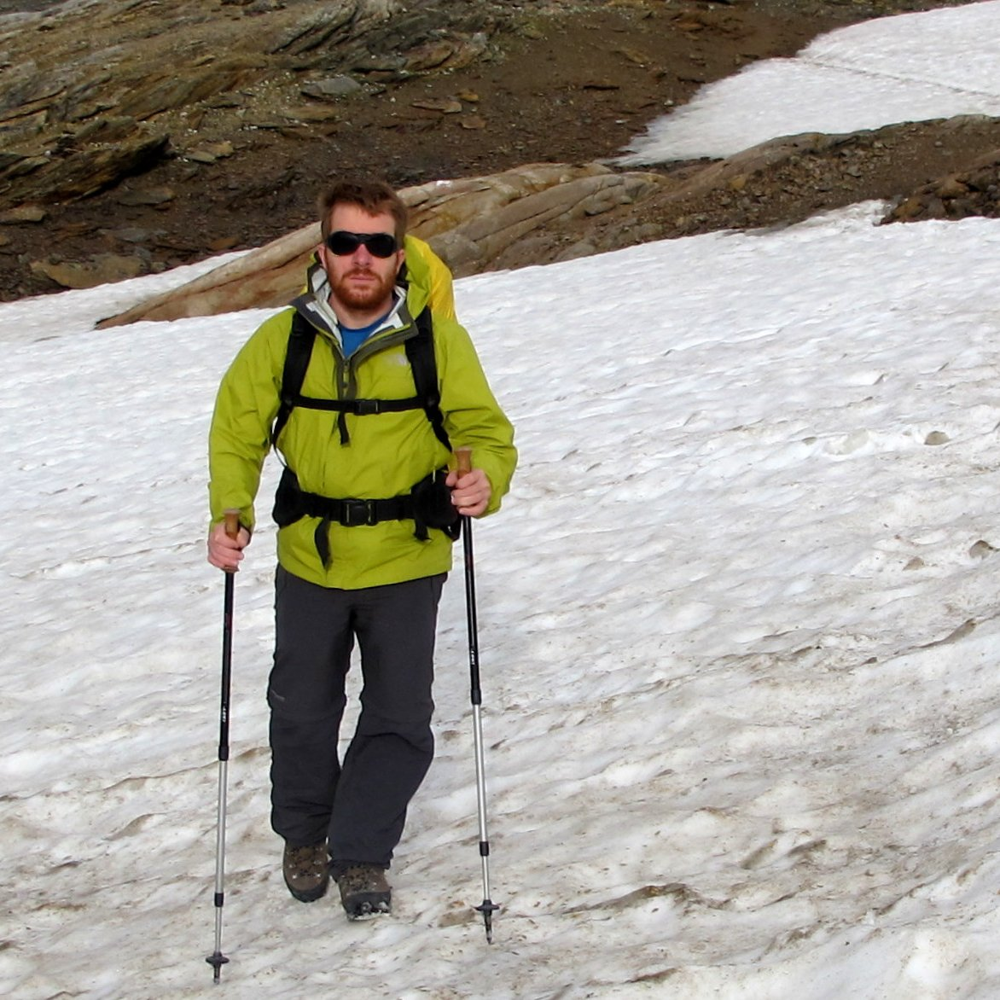

| Home | Program | Useful Links |
Spectral Geometry in the clouds is an international online seminar covering a wide range of topics around spectral geometry and geometric analysis. It was created in 2019 by Alexandre Girouard and Jean Lagacé, and has since been a great way for the community to meet regularly. We welcome newcomers so please do join the mailing list to gain access!
The talks take place on zoom every Monday at 8am PDT / 11am EDT / 4pm BST / 5pm CEST, and last for an hour.
The current organizers of the seminar are Alexandre Girouard (Université Laval), Jean Lagacé (King's College London) and Laura Monk (University of Bristol).
|  |
|